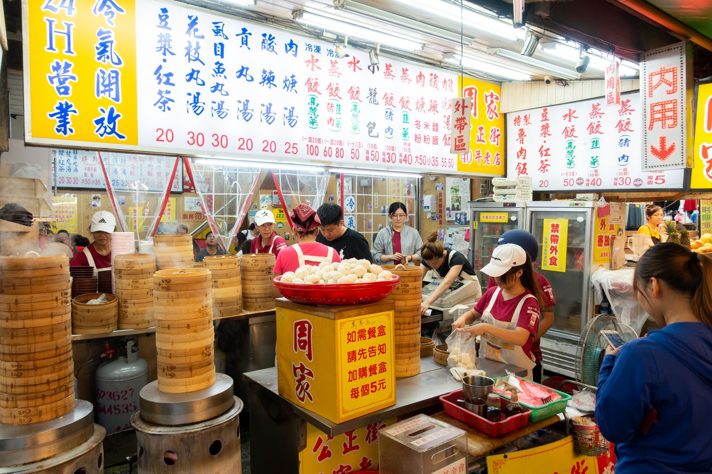

대만 식당 중국어 메뉴판, 구글 번역 카메라로 읽을 수 있을까?
벽에 붙은 한자 메뉴판 앞에서 막막할 때 휴대폰 카메라 하나로 꽤 많은 걸 해결할 수 있어요.
게시
"한국어 메뉴가 없는 가게는 그냥 지나쳐야 할까요?" 구글 번역 카메라 메뉴 기능을 쓰면 휴대폰을 메뉴판에 비추기만 해도 화면 위에 한국어 번역이 겹쳐 나와요. 안드로이드와 아이폰 모두 같은 앱으로 쓸 수 있어요. Google 번역·Google 지도 고객센터 안내를 바탕으로 대만 식당에서 쓰기 좋은 방법을 정리해봤어요.
01 · 구글 번역 카메라 메뉴 기능 한눈에 보기
| 기능 | 이럴 때 | 지원 언어(Google Play 기준) |
|---|---|---|
| 즉석 카메라 번역 | 메뉴판에 바로 비춰 볼 때 | 94개 언어 |
| 사진 번역 | 찍어 둔 사진·스크린샷을 볼 때 | 90개 언어 |
| 오프라인 번역 | 데이터가 안 터질 때 | 언어팩 다운로드 필요 |
대만 메뉴판은 번체자라 중국어(번체)를 출발어로 고르거나 '언어 감지'를 쓰면 돼요(2026년 10월 기준).
02 · 카메라로 메뉴 읽는 순서
언어 고르기 앱에서 출발어는 중국어(번체) 또는 '언어 감지', 도착어는 한국어로 맞춰요.
카메라 비추기 홈 화면의 카메라를 누르고 메뉴판에 비추면 번역이 화면에 겹쳐 보여요.
화면 고정하기 촬영 버튼을 누르면 화면이 멈춰서 천천히 읽을 수 있어요.
필요한 줄만 고르기 '원문 보기'를 켠 뒤 단어를 탭하고 앵커를 끌어 범위를 조정하면, 그 부분 번역이 카드로 따로 떠요.

03 · 가기 전에 미리 읽어두기
가게에 들어가기 전 구글 지도 앱에서 식당을 열고 정보 탭의 '메뉴'를 누르면 사용자가 올린 요리 사진과 리뷰를 볼 수 있어요. 다만 모든 요리가 등록돼 있지는 않아요. 메뉴판 사진을 캡처해 두었다가 번역 앱 카메라 화면에서 '모든 이미지'를 눌러 불러오면 사진 번역으로 읽을 수 있어요. 출발어·도착어 언어팩을 미리 받아두면 인터넷 없이도 카메라 번역을 쓸 수 있어요.
04 · 번역이 이상할 때
글씨 상태 확인 글씨가 작거나 흐리거나 붓글씨처럼 꾸민 서체면 정확도가 떨어져요. 가까이 찍고, 어두우면 플래시를 켜세요.
복사·검색 활용 번역된 메뉴명을 골라 '텍스트 복사'나 '검색'을 누르면 Google에서 사진을 바로 찾아볼 수 있어요.
단어는 따로 알아두기 土豆처럼 대만에서 뜻이 다른 단어는 번역기도 헷갈릴 수 있어요.
버전 차이 앱 메뉴 이름과 버튼 위치는 앱 버전과 OS에 따라 조금씩 달라요.
"비추고, 멈추고, 필요한 줄만 고르기." — Google 번역 고객센터 안내를 바탕으로 정리한 한 줄 요약입니다.
번역기만으로 헷갈리는 음식 단어는 대만 메뉴판 중국어 글에서 미리 익혀두세요. 연습할 곳이 필요하다면 타이베이 맛집 지도의 타이베이 노점 맛집이나 메뉴가 단출한 아종면선부터 시작해보세요.
지도에서 타이베이 노점 맛집을 찾아보세요
번역 앱을 들고 도전해보기 좋은 타이베이 노점을 지도에서 확인해보세요.